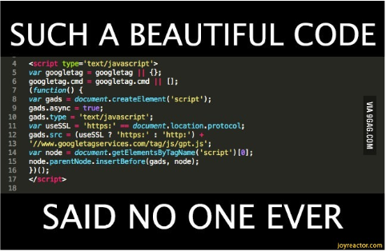
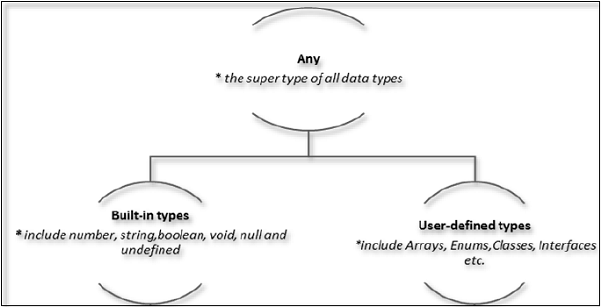

Introduction to TypeScript
(👩🏾💻 coding JavaScript without the pain 👨🏼💻)

Keshan Nageswaran
Senior Software Engineer at Zone24x7
- 💾 2+ Years Professional Experience
- 📝 Reading for Masters at University of Moratuwa
- 🎤 Speaker
- 🥑 90% plant-based diet and runner 🏃🏻
Agenda
- 🔐 Evolution of THE WEB
- 🔐 Evolution of Browser Scripting Languages
- 🔐 Origin of JavaScript
- 🔐 ECMA Script Standarization
- 🔐 Why TypeScript?
- 🔐 Environment Setup
- 🔐 TypeScript - Basic Syntax
- 🔐 TypeScript - Types | Variables
- 🔐 TypeScript - Operators
- 🔐 Demo Time
Back in 1994

Netscape 1.0

Internet Explorer 1.0

Evolution of THE WEB

Boom of WEB 2.0

Evolution of Browser Scripting Languages

Origin of JavaScript
- Developed by Brendan Eich while working for Netscape.
- First version was completed in ten days in order to accomdate the Navigator 2.0 Beta release schedule
- First release Netscape Navigator 2.0 (Sep/1995)
- Incorporate logic and action to HTML
- Main focus on simplicity, to be reachable for "non-exports"
- Mocha -> LiveScript -> JavaScript
ECMA Script Standarization
- Submitted by Netscape in Novemeber 1996
- First edition published in June 1997. ECMA-262 specification
- 2nd edition published one year later
- 3rd edition published in Decemeber 1999
- 4th was never completed, 5th released in December of 2009
- Currently the standard is 6, released in June 2015
- http://www/ecmascript.org/
What's Good about JavaScript
- Enhance web pages
- Data entry validation
- Single page application
- Unburdening busy servers
- It's everywhere
- Flexibility (small learning curve)
- Huge amount of libraries
What's Not so Good about JavaScript
- Design errors
- Inconsistent implementation
- Bad books
- Challenging to manage on large projects
- It's everywhere
- Flexibility (a lot of crappy code)
- Lack of modularity
- Verbose patterns (IIFE)
- In Summary: JavaScript development scales badly
The Good parts

Not Pretty
Debugging JavaScript

Wish List
- Scalable HTML5 clientside development
- Modular development
- Easily learnable for Java Developers
- Non-invasive (existing libs, browser support)
- Long term vision
- Clean JS output (exit strategy)
TypeScript for the Rescue
- Typed Superset of JavaScript
- JavaScript, but built for more scale
- Prevents Trivial errors
- Makes code more readable
- Discovers the impact of change
- No special runtime
- Compiles to Ecmascript
- Productivity booster
TypeScript Components

- Language
- TypeScript Compiler
- TypeScript Language and Service
- Declaration files

Backend to Frontend

I like backend languages like Java, C#.
I want to learn JavaScript but don't lose some things that I like from my languages.
Advanced Developer

I consider that I know a lot about frontend and JavaScript I start feeling that I need something more, without stop doing JavaScript.
Beginner

I'm a beginner programmer, I want to learn JavaScript. Probably start with TypeScript is the best decision.
Real World
🔎 Discovery
Intent is clearer with types and interfaces.
Real World
📄 Documentation
Libraries make it easier to discover and learn how to use APIs.
Real World
🥇 Version Safety
Use the latest language syntax even when targeting older browsers.
Real World
🔐 Development Time Security
Less "fat-finger", catch bugs earlier in the cycle.
Real World
🚑 Scope Safety
Modules, Classes, and Lambdas take care of this.
Real World
🤼🤸⛹️🏌️ Team Scale
Easier for multiple teams and members to work in parallel.
Real World
🎢 Increased Velocity
Team had 4x velocity with TypeScript vs. just JavaScript. Oh, and the Angular team uses it, for goodness' sake!
Environment Setup
- Node.js is an open source, cross-platform runtime environment. Download NodeJs from https://nodejs.org/en/download/. Type "node -v"
- Type the following command in the terminal window to install TypeScript. "npm install -g typescript". Type "tsc -v"
- Install Open Source Visual Studio Code from https://code.visualstudio.com/download
- We gonna use Notepad++ | Notepad for this session
Identifiers in TypeScript
- Includes characters and digitis, not begin with digit
- Identifier cannot include special characters, except (_) or ($)
- Identifer cannot be a keyword
- Should be unique
- Should be case-sensitive
- Should not contain spaces

Keywords in TypeScript

Statements & Comments
- TypeScript ignores spaces, tabs and newlines
- Each line of instruction is called statement. Semicolons are optional, except more than one statement occupies a single line.
- Single and Multi line comments are available
Types in TypeScript
Variables in TypeScript

Demo Time!

Hello World program write and Execute in JavaScript